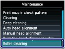

If the Paper Feed Roller is dirty or paper powder is attached to it, paper may not be fed properly.
In this case, clean the Paper Feed Roller. Cleaning will wear out the Paper Feed Roller, so perform this only when necessary.
You need to prepare: three sheets of A4 or Letter-sized plain paper
Make sure that the power is turned on.
Open the Paper Output Tray gently.
Select Roller cleaning.
(1) Press the Setup button.
The setup menu screen will appear.
(2) Select Maintenance , and press the OK button.
The Maintenance screen will appear.
(3) Select Roller cleaning, and press the OK button.

The confirmation screen will appear.
(4) Select Yes, and press the OK button.
(5) Select the paper source to clean (Rear tray or Cassette), and press the OK button.
Clean the Paper Feed Roller without paper.
(1) Follow the message to remove paper in the paper source you selected in (5) of step 3.
(2) Press the OK button.
The Paper Feed Roller will rotate as it is cleaned.
Clean the Paper Feed Roller with paper.
(1) Make sure that the Paper Feed Roller has stopped rotating, then follow the message to load three or more sheets of A4 or Letter-sized plain paper in the paper source you selected in (5) of step 3.
(2) Press the OK button.
The machine starts cleaning. The cleaning will be completed after the paper is ejected.
(3) When the completion message appears, press the OK button.
The screen will return to the Maintenance screen.
 Note Note
|
If this does not solve the problem, contact the service center.